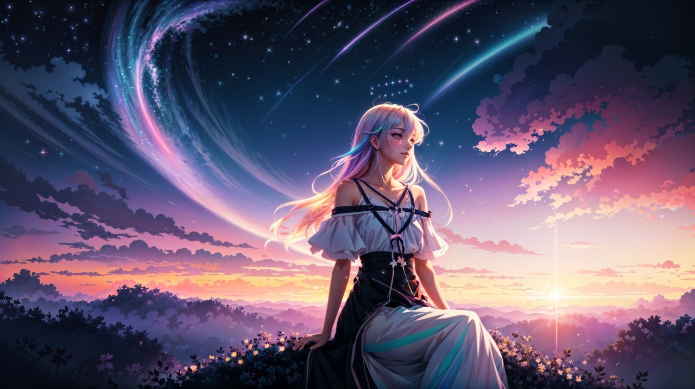

Discover the World of Anime

Welcome to the World of Anime!
It encompasses a wide range of genres, including action, romance, fantasy, and science fiction, appealing to audiences of all ages.
Anime is not just limited to children's entertainment; it has evolved into a significant cultural phenomenon, influencing pop culture and inspiring a global fanbase.
The term "anime" is a Japanese colloquialism for "animation," and in Japan, it refers to all forms of animated works, regardless of their origin or style.
The medium has a rich history, with its earliest commercial works dating back to 1917, and it has undergone significant development over the decades,
becoming a distinct art form with its own aesthetic and narrative traditions.
Why People Love Anime
- Interesting Stories: Anime has many different stories that can entertain and inspire viewers.
- Unique Characters: Anime characters have different personalities, abilities, and backgrounds.
- Beautiful Animation: Anime is known for its colorful artwork, creative designs, and amazing scenes.
- Different Genres: There are many genres to choose from, including action, romance, comedy, fantasy, and adventure.
- Emotional Moments: Anime can make viewers feel happy, excited, surprised, or even emotional.
Popular Anime Names
- Naruto
- One Piece
- Attack on Titan
- Demon Slayer
- My Hero Academia
Things You Can Find on This Website
- Anime Names: Discover different anime titles and characters.
- Gallery: View pictures and artwork from different anime.
- About Anime: Learn more about anime and its history.
- Pinterest: Find more anime pictures and ideas.
- Favorite Characters: Explore some of the most popular anime characters.